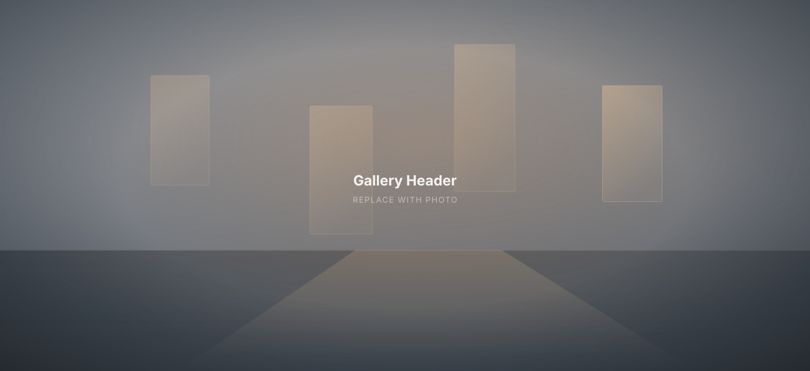
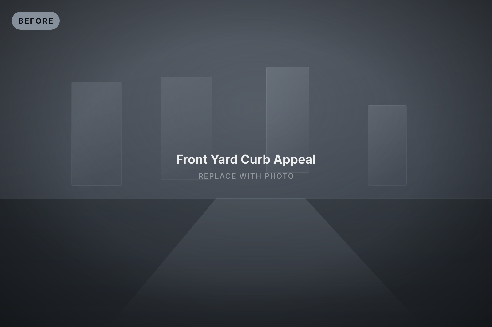
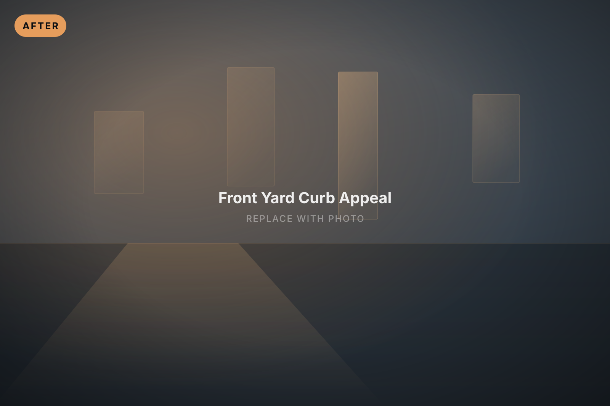
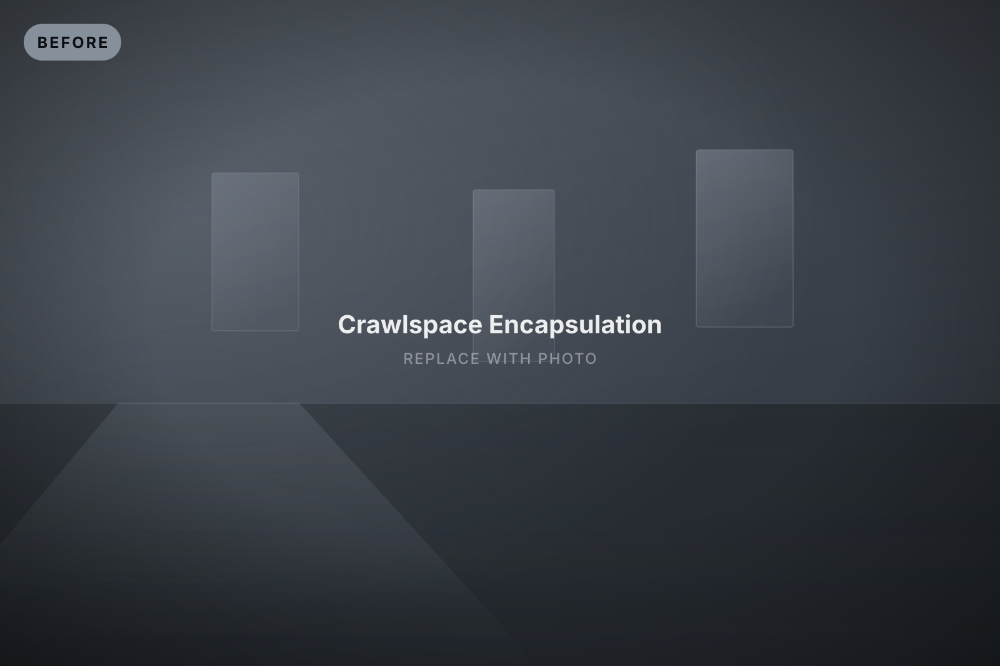
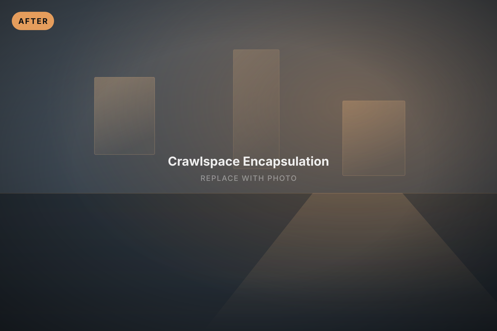
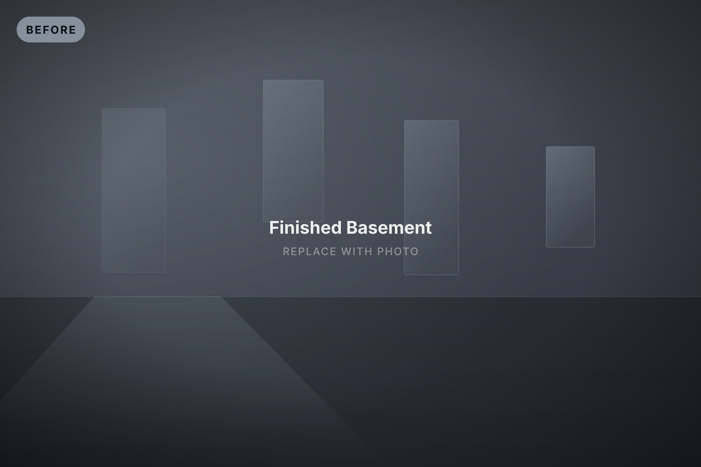
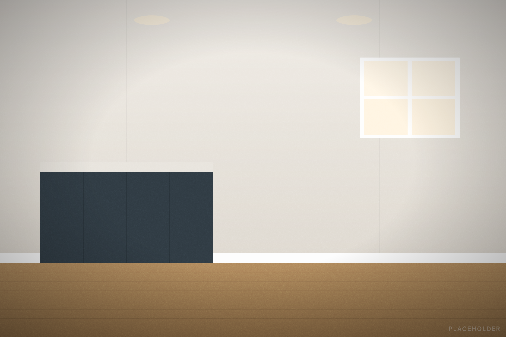
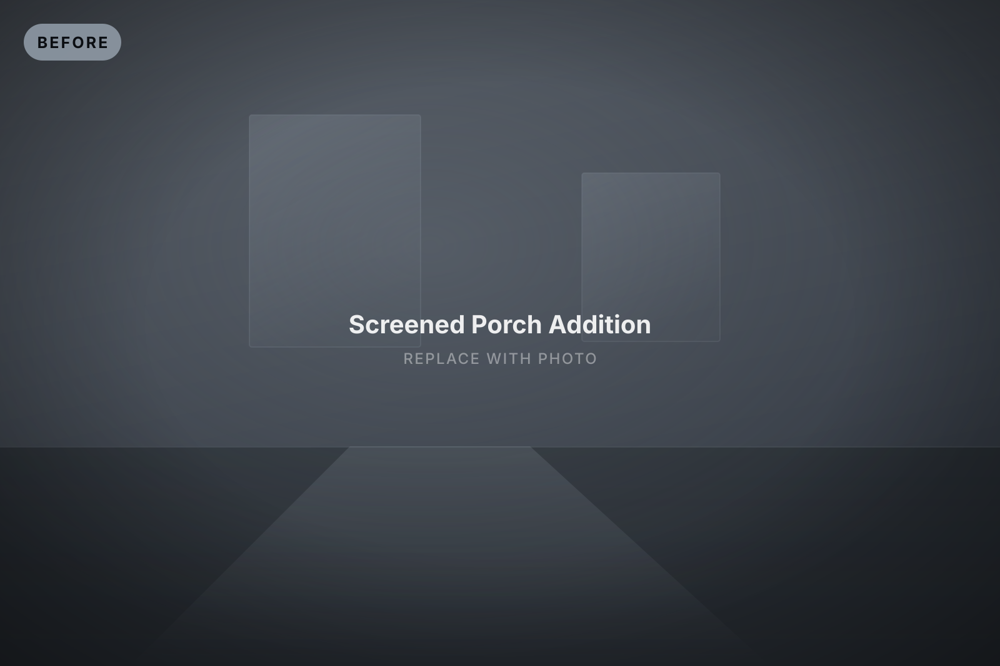
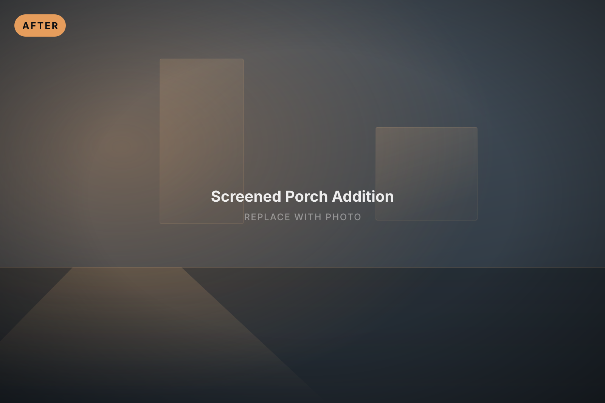

Full kitchen gut & rebuild
Removed a load-bearing wall, relocated plumbing and gas lines, and rebuilt with custom cabinetry and a 10-foot island.
6 weeksTimeline
320 sq ftScope

Our work
Every project below is shown as a before-and-after pair. Drag the handle to wipe between them, or switch any project — or the whole page — to side-by-side.
12 projects shown
Removed a load-bearing wall, relocated plumbing and gas lines, and rebuilt with custom cabinetry and a 10-foot island.


900 sq ft of containment, HEPA filtration and full drywall replacement after a chronic foundation leak. Passed clearance on the first test.


Tore out a rotted 1990s deck, re-footed to frost depth and built 620 sq ft of western red cedar with cable railing and integrated lighting.


Corrected negative grade against the foundation, installed a French drain, then finished with an 800 sq ft paver patio and new sod.


Second-floor supply line failed overnight. On site in 90 minutes, dried to standard in four days, rebuilt two ceilings and a kitchen.


Full-house lead assessment followed by abatement and encapsulation of original trim, plus 22 replacement windows. Cleared on first pass.


Reconfigured a cramped 1960s layout into a curbless walk-in shower with double vanity, radiant floor and proper ventilation.


New walkway, stone steps, foundation planting and lighting, completed two weeks before the home went on the market.


Full envelope replacement: architectural shingle roof, fiber cement siding, new soffit, fascia and oversized gutters.


Cleared debris and standing water, added a sump and vapor barrier, sealed and insulated. Interior humidity dropped 22 points.


Turned an unfinished basement into a legal living space with egress window, full bath, wet bar and dedicated HVAC zone.


Converted an exposed rear deck into a four-season screened porch with a standing seam roof and skylights.

Free, no-pressure estimate
Send a few photos and we'll come back with a real number — usually within one business day.